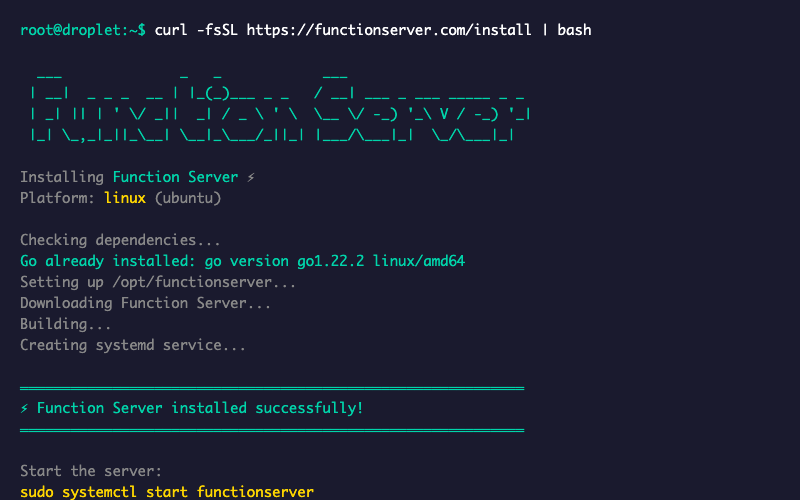
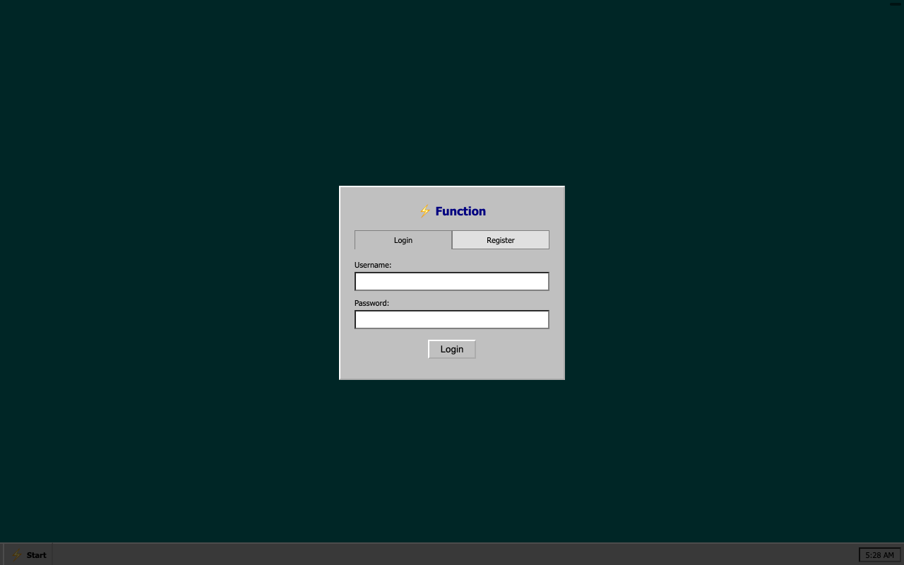

From zero to running in 60 seconds
1
Run the installer
Single command installs Go, downloads the server, creates a systemd service.

2
Register a user
Visit your server's IP. Create an account through the Windows 95-style interface.

3
Start building
Open the terminal. Clone repos, run code, install Claude Code. Your sandboxed environment.